Matplotlib 散布図
散布図を描画するには、pyplot の scatter() メソッドを使用できます。
scatter() メソッドの構文は次のとおりです：
matplotlib.pyplot.scatter(x, y, s=None, c=None, marker=None, cmap=None, norm=None, vmin=None, vmax=None, alpha=None, linewidths=None, *, edgecolors=None, plotnonfinite=False, data=None, **kwargs)
パラメータの説明：
x，y：長さが同じ配列、つまりこれから散布図に描画するデータ点、入力データです。
s：点のサイズ。デフォルトは20。配列にすることもでき、配列の各要素が対応する点のサイズになります。
c：点の色。デフォルトは青 'b'。RGB または RGBA の2次元行配列にすることもできます。
marker：点のスタイル。デフォルトは小さい円 'o'。
cmap：Colormap。デフォルトは None。スカラーまたは colormap の名前。c が浮動小数点数の配列の場合にのみ使用されます。宣言されていない場合は image.cmap になります。
norm：Normalize。デフォルトは None。データの輝度を0〜1の間にします。c が浮動小数点数の配列の場合にのみ使用されます。
vmin，vmax：：輝度の設定。norm パラメータが存在する場合は無視されます。
alpha：：透明度の設定。0〜1の間。デフォルトは None、つまり不透明です。
linewidths：：マーカーポイントの長さ。
edgecolors：：色または色シーケンス。デフォルトは 'face'。選択可能な値は 'face', 'none', None です。
plotnonfinite：：ブール値。非有限の c (inf, -inf または nan) を使用して点を描画するかどうかを設定します。
**kwargs：：その他のパラメータ。
次の例では、scatter() 関数は長さが同じ配列パラメータを受け取ります。1つは x 軸の値、もう1つは y 軸の値に使用します：
サンプル
import numpy as np
x = np.array([1, 2, 3, 4, 5, 6, 7, 8])
y = np.array([1, 4, 9, 16, 7, 11, 23, 18])
plt.scatter(x, y)
plt.show()
表示結果は次のとおりです：
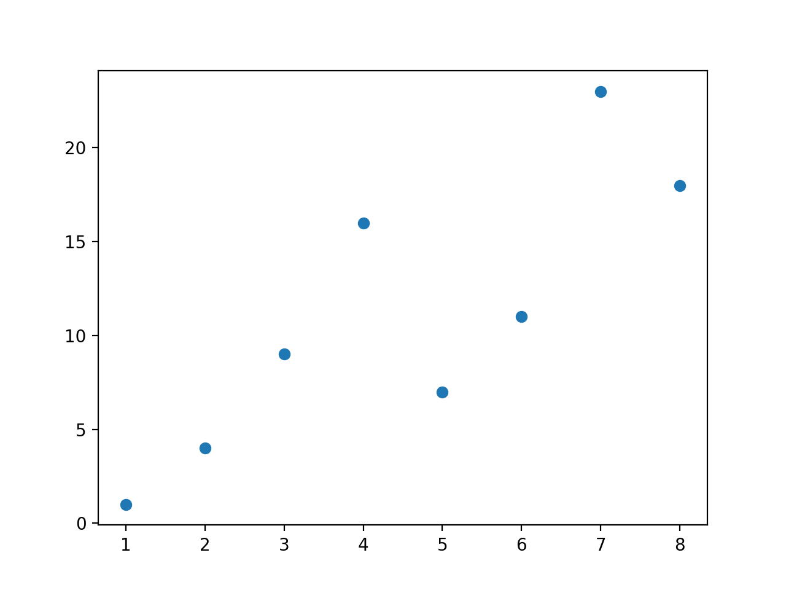
マーカーのサイズを設定：
サンプル
import numpy as np
x = np.array([1, 2, 3, 4, 5, 6, 7, 8])
y = np.array([1, 4, 9, 16, 7, 11, 23, 18])
sizes = np.array([20,50,100,200,500,1000,60,90])
plt.scatter(x, y, s=sizes)
plt.show()
表示結果は次のとおりです：
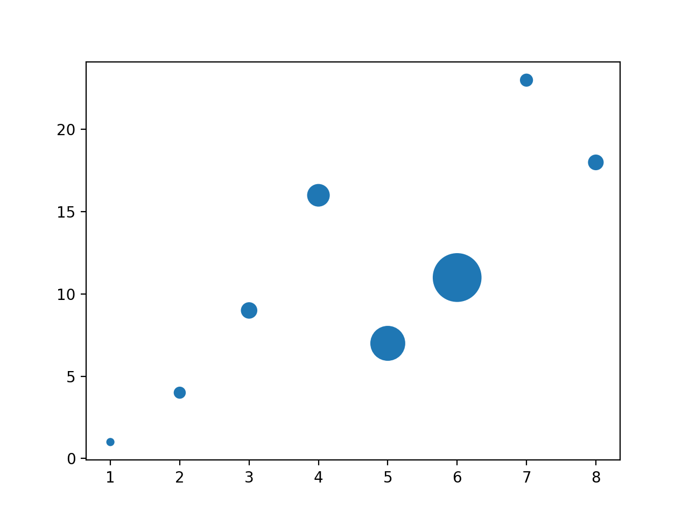
点の色をカスタマイズ：
サンプル
import numpy as np
x = np.array([1, 2, 3, 4, 5, 6, 7, 8])
y = np.array([1, 4, 9, 16, 7, 11, 23, 18])
colors = np.array(["red","green","black","orange","purple","beige","cyan","magenta"])
plt.scatter(x, y, c=colors)
plt.show()
表示結果は次のとおりです：
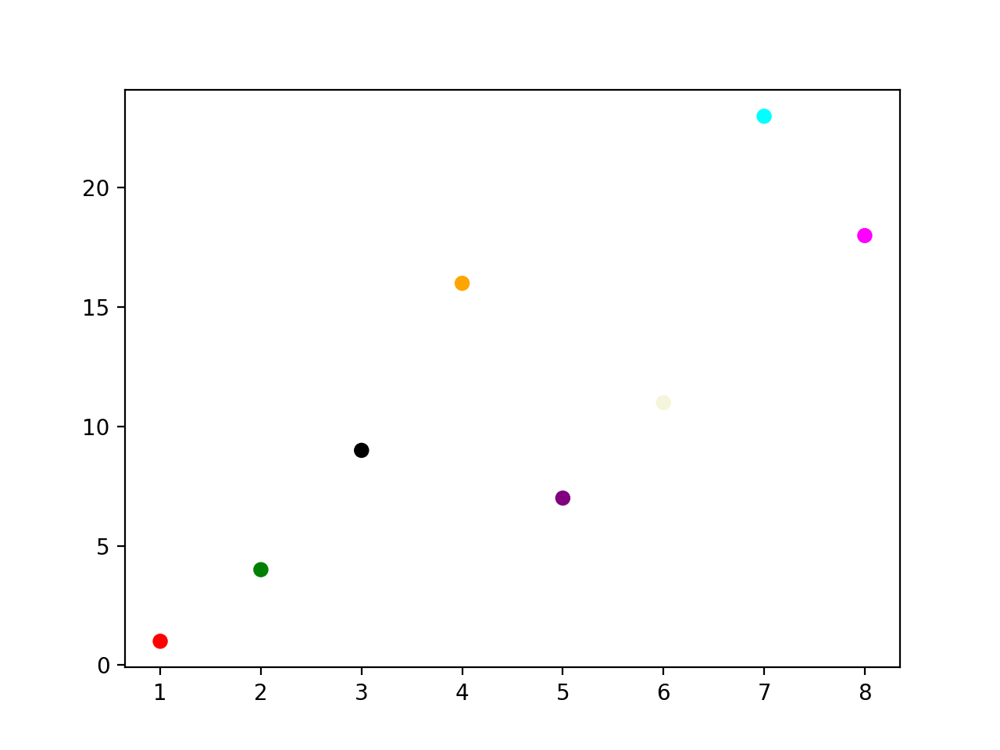
2組の散布図を設定：
サンプル
import numpy as np
x = np.array([5,7,8,7,2,17,2,9,4,11,12,9,6])
y = np.array([99,86,87,88,111,86,103,87,94,78,77,85,86])
plt.scatter(x, y, color = 'hotpink')
x = np.array([2,2,8,1,15,8,12,9,7,3,11,4,7,14,12])
y = np.array([100,105,84,105,90,99,90,95,94,100,79,112,91,80,85])
plt.scatter(x, y, color = '#88c999')
plt.show()
表示結果は次のとおりです：
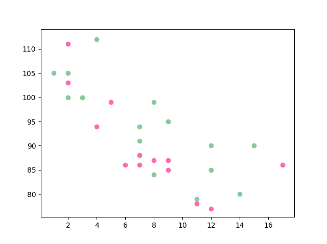
乱数を使用して散布図を設定：
サンプル
import matplotlib.pyplot as plt
# 乱数生成器のシード
np.random.seed(19680801)
N = 50
x = np.random.rand(N)
y = np.random.rand(N)
colors = np.random.rand(N)
area = (30 * np.random.rand(N))**2 # 0 to 15 point radii
plt.scatter(x, y, s=area, c=colors, alpha=0.5) # 色と透明度を設定
plt.title("RUNOOB Scatter Test") # タイトルを設定
plt.show()
表示結果は次のとおりです：

カラーバー Colormap
Matplotlib モジュールには、利用可能なカラーバーが多数用意されています。
カラーバーは色のリストのようなもので、各色は0から100までの範囲の値を持ちます。
以下はカラーバーの例です：
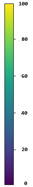
カラーバーを設定するには cmap パラメータを使用する必要があります。デフォルト値は 'viridis' で、その後色の値を0から100までの配列に設定します。
サンプル
import numpy as np
x = np.array([5,7,8,7,2,17,2,9,4,11,12,9,6])
y = np.array([99,86,87,88,111,86,103,87,94,78,77,85,86])
colors = np.array([0, 10, 20, 30, 40, 45, 50, 55, 60, 70, 80, 90, 100])
plt.scatter(x, y, c=colors, cmap='viridis')
plt.show()
表示結果は次のとおりです：
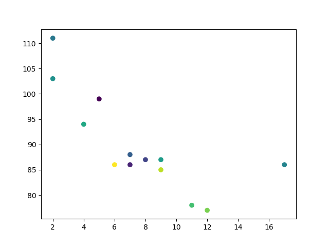
カラーバーを表示するには、次のplt.colorbar()メソッドを使用します：
サンプル
import numpy as np
x = np.array([5,7,8,7,2,17,2,9,4,11,12,9,6])
y = np.array([99,86,87,88,111,86,103,87,94,78,77,85,86])
colors = np.array([0, 10, 20, 30, 40, 45, 50, 55, 60, 70, 80, 90, 100])
plt.scatter(x, y, c=colors, cmap='viridis')
plt.colorbar()
plt.show()
表示結果は次のとおりです：
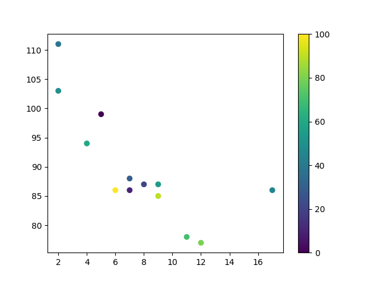
カラーバーパラメータを変更して、 cmap を設定：afmhot_r：
サンプル
import numpy as np
x = np.array([5,7,8,7,2,17,2,9,4,11,12,9,6])
y = np.array([99,86,87,88,111,86,103,87,94,78,77,85,86])
colors = np.array([0, 10, 20, 30, 40, 45, 50, 55, 60, 70, 80, 90, 100])
plt.scatter(x, y, c=colors, cmap='afmhot_r')
plt.colorbar()
plt.show()
表示結果は次のとおりです：
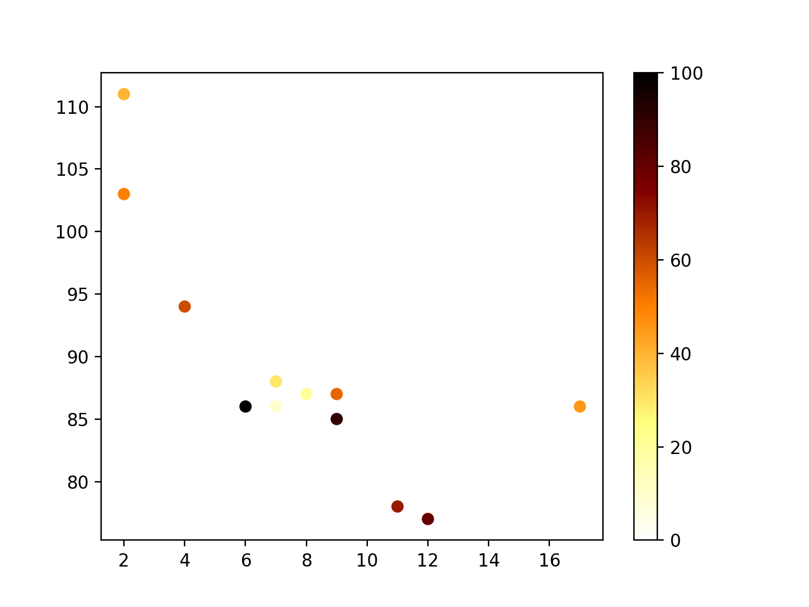
カラーバーパラメータの値には、次のものがあります：
| 色名 | 予約キーワード | |
|---|---|---|
| Accent | Accent_r | |
| Blues | Blues_r | |
| BrBG | BrBG_r | |
| BuGn | BuGn_r | |
| BuPu | BuPu_r | |
| CMRmap | CMRmap_r | |
| Dark2 | Dark2_r | |
| GnBu | GnBu_r | |
| Greens | Greens_r | |
| Greys | Greys_r | |
| OrRd | OrRd_r | |
| Oranges | Oranges_r | |
| PRGn | PRGn_r | |
| Paired | Paired_r | |
| Pastel1 | Pastel1_r | |
| Pastel2 | Pastel2_r | |
| PiYG | PiYG_r | |
| PuBu | PuBu_r | |
| PuBuGn | PuBuGn_r | |
| PuOr | PuOr_r | |
| PuRd | PuRd_r | |
| Purples | Purples_r | |
| RdBu | RdBu_r | |
| RdGy | RdGy_r | |
| RdPu | RdPu_r | |
| RdYlBu | RdYlBu_r | |
| RdYlGn | RdYlGn_r | |
| Reds | Reds_r | |
| Set1 | Set1_r | |
| Set2 | Set2_r | |
| Set3 | Set3_r | |
| Spectral | Spectral_r | |
| Wistia | Wistia_r | |
| YlGn | YlGn_r | |
| YlGnBu | YlGnBu_r | |
| YlOrBr | YlOrBr_r | |
| YlOrRd | YlOrRd_r | |
| afmhot | afmhot_r | |
| autumn | autumn_r | |
| binary | binary_r | |
| bone | bone_r | |
| brg | brg_r | |
| bwr | bwr_r | |
| cividis | cividis_r | |
| cool | cool_r | |
| coolwarm | coolwarm_r | |
| copper | copper_r | |
| cubehelix | cubehelix_r | |
| flag | flag_r | |
| gist_earth | gist_earth_r | |
| gist_gray | gist_gray_r | |
| gist_heat | gist_heat_r | |
| gist_ncar | gist_ncar_r | |
| gist_rainbow | gist_rainbow_r | |
| gist_stern | gist_stern_r | |
| gist_yarg | gist_yarg_r | |
| gnuplot | gnuplot_r | |
| gnuplot2 | gnuplot2_r | |
| gray | gray_r | |
| hot | hot_r | |
| hsv | hsv_r | |
| inferno | inferno_r | |
| jet | jet_r | |
| magma | magma_r | |
| nipy_spectral | nipy_spectral_r | |
| ocean | ocean_r | |
| pink | pink_r | |
| plasma | plasma_r | |
| prism | prism_r | |
| rainbow | rainbow_r | |
| seismic | seismic_r | |
| spring | spring_r | |
| summer | summer_r | |
| tab10 | tab10_r | |
| tab20 | tab20_r | |
| tab20b | tab20b_r | |
| tab20c | tab20c_r | |
| terrain | terrain_r | |
| twilight | twilight_r | |
| twilight_shifted | twilight_shifted_r | |
| viridis | viridis_r | |
| winter | winter_r |
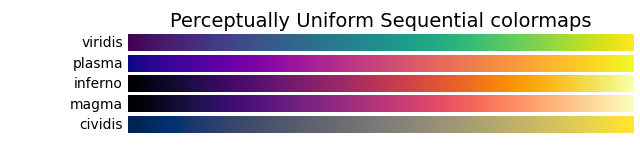
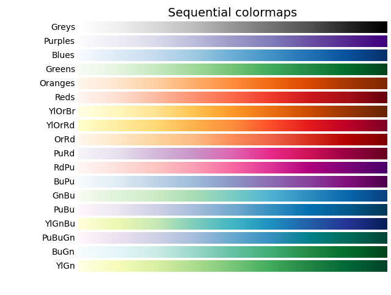
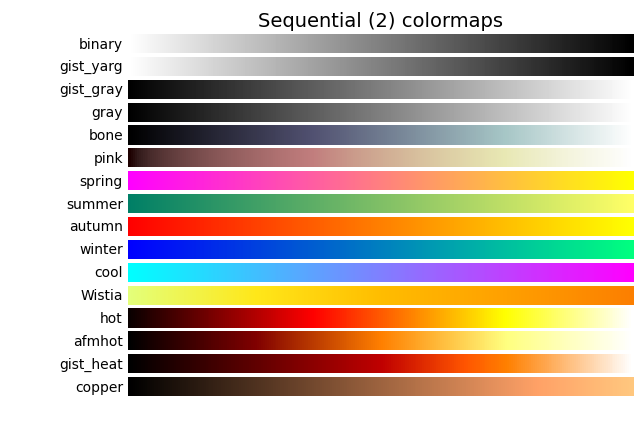
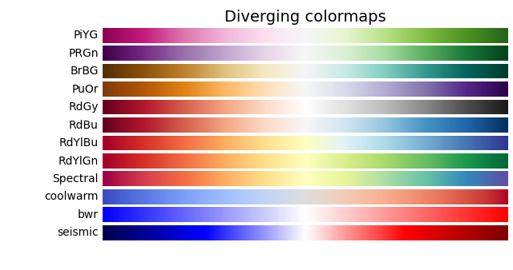
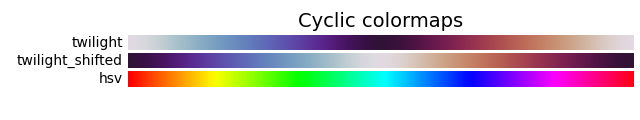
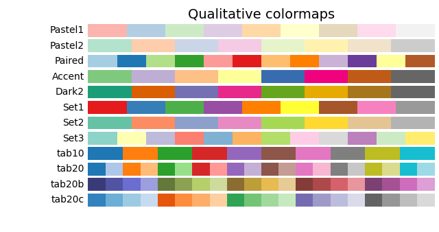
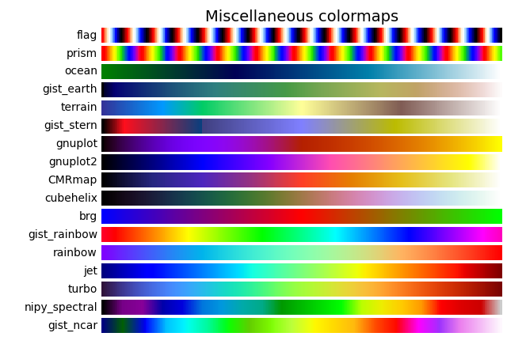
その他の拡張
クリックしてノートを共有
<p style="font-size:14px;">ノートはこの記事の内容の拡張である必要があります！</p><br> <p style="font-size:12px;"><a href="../tougao.html" target="_blank">記事の投稿は、ここをクリック</a></p> <p style="font-size:14px;"><a href="../w3cnote/runoob-user-test-intro.html" target="_blank">招待コードの取得方法</a></p> <h3 class="text-muted"><i class="fa fa-info-circle" aria-hidden="true"></i> ノートを共有する前に<a href=";.html" class="runoob-pop">ログイン</a>が必要です！</h3> <p><a href="../w3cnote/runoob-user-test-intro.html" target="_blank">招待コードの取得方法</a></p>